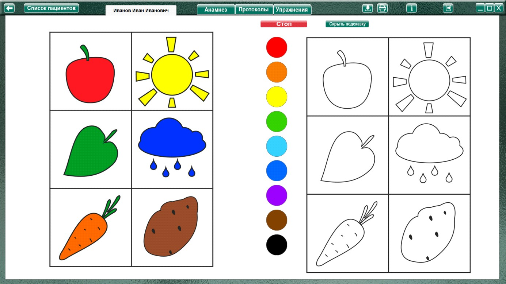
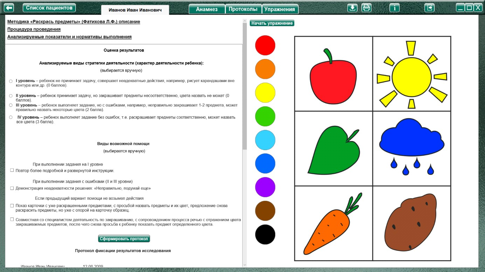
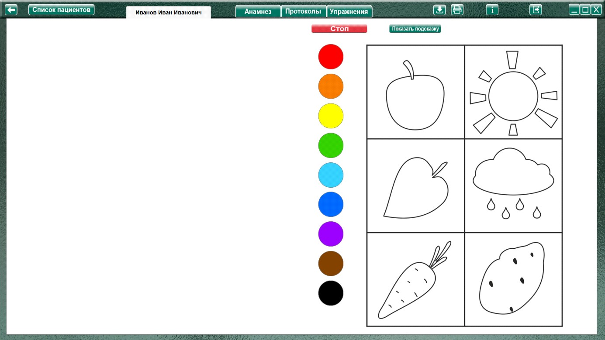

Методика «Раскрась предметы» (Фатихова Л.Ф.)
Методика «Раскрась предметы» (Фатихова Л.Ф.) описание
карточка с аналогичными, но уже раскрашенными предметами.
Процедура проведения.
Ребенку предлагается карточка с контурными изображениями предметов.
Инструкция: «Художник нарисовал разные предметы, но раскрасить их забыл. Помоги художнику.
Раскрась картинки».
После раскрашивания ребенка спрашивают, каким цветом он раскрасил предметы.
Анализируемые показатели и нормативы выполнения
I уровень – ребенок не принимает задачу, совершает неадекватные действия, например, рисует карандашами вне контура или др. (0 баллов).
II уровень – ребенок принимает задачу, но закрашивает предметы несоответственно, цвета назвать не может (0 баллов).
III уровень – ребенок выполняет задание, но с ошибками, например, неправильно закрашивает 1-2 предмета, может правильно назвать некоторые цвета (2 балла).
IV уровень – ребенок выполняет задание без ошибок, т.е. раскрашивает предметы соответственно, может назвать все цвета (3 балла).
Примечание: если ребенок раскрашивает яблоко желтым или зеленым цветом, лист дерева – желтым или красным цветом и т.п., но при этом правильно называет цвета, которые использовал,
выполнение задания оценивается как верное.
Виды помощи
За каждый вид помощи оценка снижается на 0,5 балла.
1. При выполнении задания на I уровне экспериментатор еще раз повторяет инструкцию, делая ее более развернутой и сопровождая указательными жестами.
2. При выполнении задания с ошибками (II и III уровни) экспериментатор говорит: «Неправильно, подумай еще».
3. Если предыдущий вариант помощи не возымел действия, экспериментатор показывает карточку с аналогичными, но уже раскрашенными предметами, просит назвать предметы и их цвет на данной картинке и снова предлагает раскрасить предметы на карточке с их контурными изображениями, но уже с опорой на карточку с раскрашенными предметами.
4. Экспериментатор организует с ребенком совместную деятельность по закрашиванию, сопровождая процесс деятельности речью с отражением цвета закрашиваемых предметов, после чего снова просит ребенка показать предмет определенного цвета: «Покажи предмет красного
цвета… синего цвета…».
Анализ результатов
Группы детей |
Баллы |
Нормально развивающиеся дети |
2-3 |
Дети с задержкой психического развития |
1-3 |
Дети с умственной отсталостью |
0-2 |
Нормально развивающиеся дошкольники понимают поставленную задачу и не только правильно раскрашивают предметы, но и называют их цвет как до, так и после закрашивания. Кроме того, они могут указывать на вариативность окраски предметов, на то, что, например, яблоко или листочек могут быть как красного, так и зеленого и желтого цвета.
Дошкольники с ЗПР понимают поставленную экспериментатором задачу. При ошибках в закрашивании предметов с дополнительными цветами (морковь – оранжевая, картофель –
коричневый) им достаточно указания на ошибку: «Неправильно, подумай еще». Дошкольники, находящиеся в условиях коррекционного обучения, могут назвать все цвета или их часть.
Дошкольники с умственной отсталостью могут допускать явные ошибки или демонстрируют неадекватность в выполнении задания – закрашивать все в один цвет, например, черный или синий.
Для правильного выполнения задания им нужна значительная помощь: показ карточки с раскрашенными предметами (третий вид помощи), реже совестная деятельность по закрашиванию с
психологом (четвертый вид помощи). Дошкольники данной группы редко называют цвета, а если и называют, то несоответственно самому цвету.
И у дошкольников с ЗПР, и у дошкольников с умственной отсталостью наблюдаются нарушения графомоторных навыков: выходы за контур фигуры при закрашивании, неполное закрашивание
стимульной фигуры, слабый нажим и т.д.
Оценка результатов
Характер деятельности ребенка
(уровень выполнения)
Виды возможной помощи:
За каждый вид помощи оценка снижается на 0,5 балла
При выполнении задания на I уровне
При выполнении задания с ошибками (II и III уровни)
Если предыдущий вариант помощи не возымел действия
Протокол фиксации результатов исследования
_________________________________ _______________
ФИО Дата рождения
Методика |
Раскрась предметы |
||
Автор методики (адаптации, модификации) |
Фатихова Л.Ф. |
||
Цель: |
изучение уровня и особенностей сформированности восприятия цвета, умение соотносить предмет и его цвет (сформированности эталонов цвета); выявление знаний о цветах; выявление уровня сформированности тонкой моторики рук. |
||
Дата / специалист |
|||
Результат: баллы (макс.) / вывод об уровне развития |
|||
Примечание |
|||
Процесс выполнения диагностического задания |
|||
Характер деятельности ребенка |
Виды помощи |
Баллы |
|
Логика заполнения протокола
Заполняется автоматически
Имя специалиста – логин при входе в программу.
Дата –дата и время прохождения упражнения в формате дд.мм.гггг.
«Виды помощи» - заполняются в зависимости от выбора специалиста в поле «Оценка результатов» либо самостоятельно. За каждый выбранный вид помощи оценка снижается на 0,5 балла.
«Характер деятельности ребенка» - заполняются в зависимости от выбора специалиста в поле «Оценка результатов». В колонку «Характер деятельности ребенка» добавляется текст без баллов.
Баллы – Добавляются из выбранного пункта «Характер деятельности ребенка» без текста.
Остальные ячейки заполняются специалистом самостоятельно.
Элементы управления настройкой и выполнением упражнения.
 Кнопка «Показать/скрыть подсказку»
Кнопка «Показать/скрыть подсказку»
При нажатии открывает/закрывает в правой части экрана образец с закрашенными фигурами.

Выполнение упражнения.

После объяснения задания ребенку, нажать кнопку «Начать упражнение», открывая выполнения на весь экран.

Выполнить задание согласно пункту «Процедура проведения». Выбрать нужный цвет и раскрасить предметы при помощи мыши с зажатой левой кнопкой. Так же можно распечатать стимульный материал при помощи кнопки печать и рисовать на бумаге. По окончании задания специалист нажимает кнопку «Стоп», открывая поле для оценки результата. Раскрашенный ребенком рисунок отображается в правой части экрана.
При выполнении задания на бумаге, можно отсканировать выполненное упражнение, и сохранить его в упражнении. В дальнейшем, при просмотре протокола на странице протоколов в строке «Дата / специалист» будет надпись: «Показать изображение», при клике по которой можно будет увидеть сохраненное изображение. Для сохранения нужно сохранить отсканированное изображение в любую папку на пк. На странице упражнения «Раскрась предметы» нажать кнопку «Загрузить файл», найти и сохранить рисунок.
При необходимости выбрать характер деятельности, виды помощи, и нажать кнопку «Сформировать протокол». Произвести оценку результата (заполнить оставшиеся ячейки протокола) согласно пункту «Анализируемые показатели и нормативы выполнения».